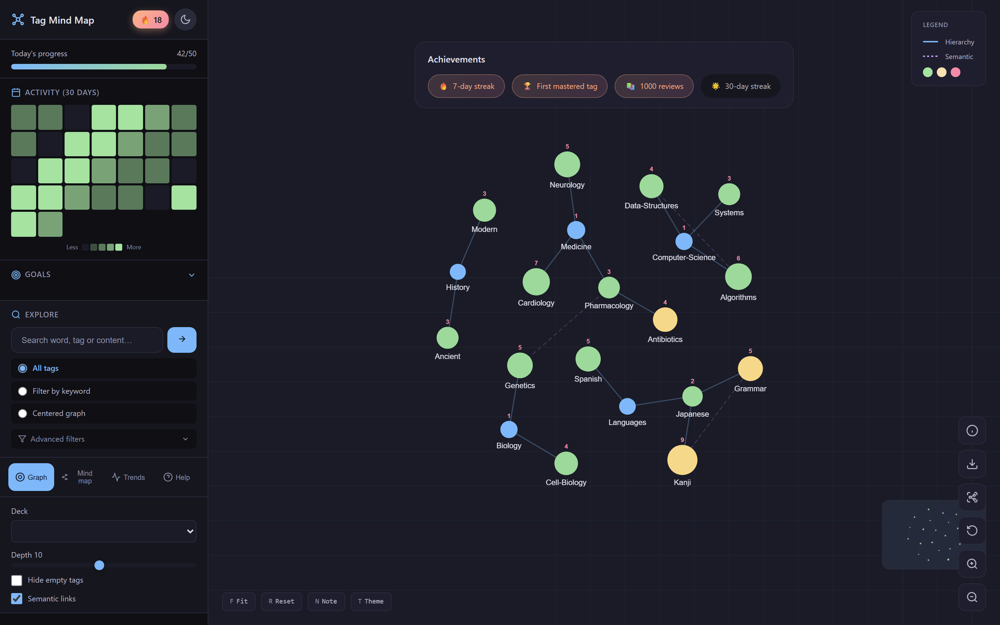
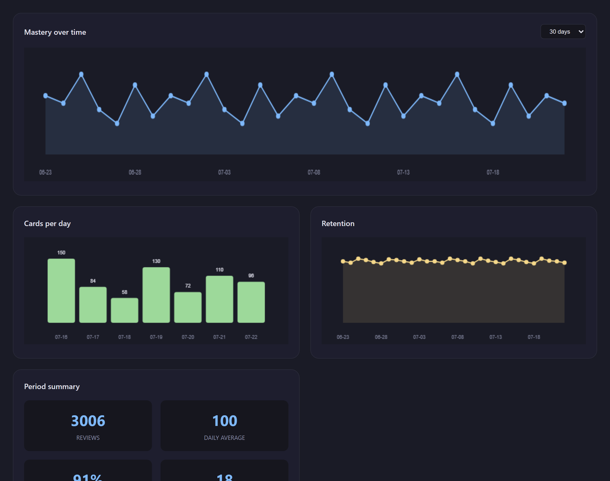
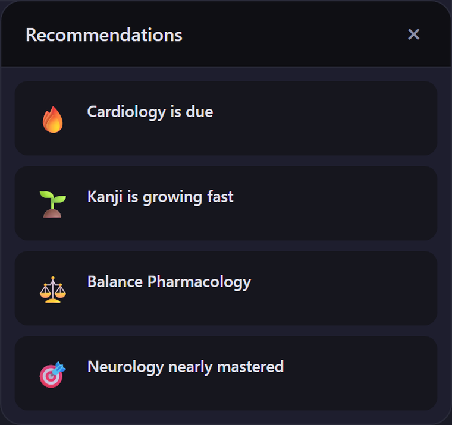
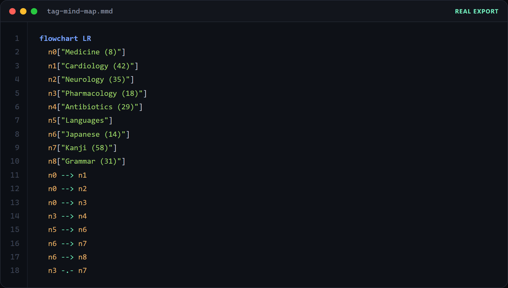

Interactive tag hierarchy
Pan, zoom, search and focus a tag branch. Parent-child relationships remain visible without flattening the collection into a list.
Anki Studio Suite · module
See the structure and momentum hidden inside your collection.
Navigate tags as an interactive graph, inspect activity and mastery, focus a branch and understand study progress with metrics that correctly follow FSRS.

Real interfaceOverview
Tag Mind Map turns the hierarchy already present in your tags into a visual surface for navigation, reflection and study decisions.
The map reads the collection locally and organizes parent/child tags as connected nodes. It then enriches that structure with card counts, recent activity, goals and scheduler-aware mastery. You can zoom from the whole knowledge space into a single branch without changing the underlying tag system.
What it does
The graph is the center, but the surrounding tools help turn a picture into an actionable study surface.
Pan, zoom, search and focus a tag branch. Parent-child relationships remain visible without flattening the collection into a list.
When FSRS is active, mastery follows retrievability and stability instead of the obsolete ease value.
Connect topic structure to daily work with review activity, progress targets and study continuity.
Spot neglected branches, fragile knowledge and areas with momentum through scheduler-aware insights and recommendations.
Filter the graph, isolate a branch and move from a tag directly to the cards that make up that concept space.
Generate a correctly escaped, deduplicated Mermaid flowchart from the hierarchy for notes, documentation or sharing.
In action
Every image below is rendered by the add-on's own graph frontend and Mermaid generator — not a mockup.



How it works
The add-on uses the tags already stored in your Anki collection. It does not upload notes or require an account.
Nested tags become connected nodes. Search, zoom and branch focus keep large collections navigable.
Counts, recent activity and FSRS-aware values reveal how each knowledge area is developing.
Open the relevant cards, follow an insight or export the visible hierarchy as offline Mermaid text.
Safety by design
The default experience is read-oriented and local. Actions that could change collection data remain explicit.
Compatibility
Release status
The core graph and scheduler logic have been tested; the page keeps the remaining release work visible.
The graph, statistics, FSRS metrics and Mermaid generator are tested. Publication is waiting for the export button wiring, final translation sweep and visual QA inside Anki.
Install in Anki
The public installation route will appear here as soon as the unified package completes the remaining release gates. No separate Tag Mind Map code will be issued.
Available at launchThe final public ID has not been selected yet. We will publish it here after the unified suite passes the release gates.
Frequently asked questions
Exploring the map is read-only. It visualizes the hierarchy already present in the collection and does not silently rename, move or delete tags.
When FSRS is enabled, the add-on uses retrievability and stability — the meaningful modern scheduler values — instead of the old ease value.
No. Rendering, metrics and Mermaid generation run locally. No remote graph library, account or CDN is required.
The two modules ship as one suite. You can use only the map, but a unified package avoids duplicated infrastructure and conflicting versions.
The generator is implemented and tested. Its interface button is one of the explicit gates that will be completed before the public release.